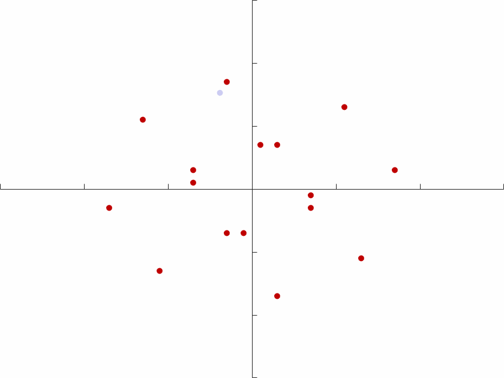
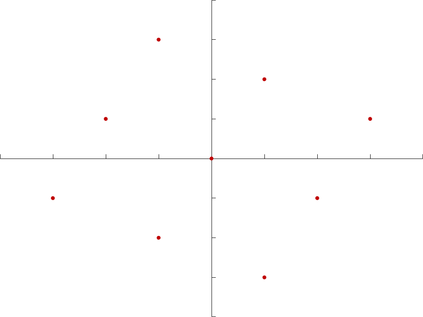

We first consider the noisy channel for fixed fading conditions.
We first consider the Two-Way Relay Channel (TWRC) as a foundation for the more involved multi-way relaying situation. We have two users, each able to send 4 distinct signals. One possible realisation of this is Quadrature Phase Shift Keying. We intentionally let the users communicate at the same time, allowing interference. The relay receives a signal of the following form: $$H_{1}x_{1} + H_{2}x_{2} + n_{R}$$
If we now allow each user to send $8$ distinct signals the relay can receive a total of $8^{2}$ or $64$ possible values. This can also be visualised by varying the fading coefficients for each of the two channels.